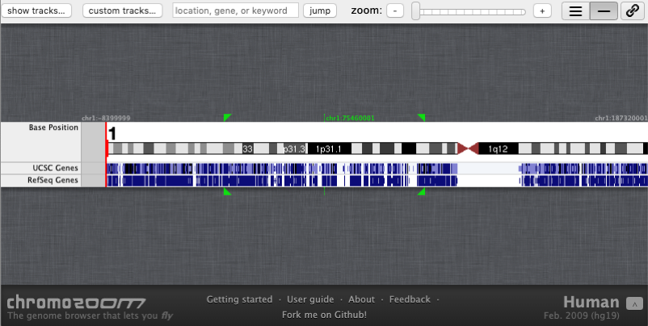

Problema:Comparar visualmente varias secuencias genómicas respecto a una posición (locus) específica y común para todas las secuencias

Presentar las secuencias genómicas a través de un sistema de pistas que permita la comparación visual entre ellas. Una pista es una representación unidimensional (es decir, una sola dimensión: la posición) del contenido de una muestra o secuencia genética. Usar el patrón Cargar Muestra para configurar la secuencia de datos que se quiere visualizar en la pista. La presentación y disposición de las pistas debe cumplir: i) adyacencia (las pistas se sitúan una junto a la otra, ya sea en una orientación vertical u horizontal); ii) alineación (todas las pistas deben presentar las secuencias alineadas respecto a una escala de posiciones de referencia); iii) escala (los controles de alejamiento o acercamiento modifican la escala de visualización definiendo un rango visible de bases de ADN, por lo tanto, todas las pistas deben presentar su contenido considerando el número de bases de visible).
La orientación del sistema de pistas es horizontal, ocupando en gran medida el espacio de la interfaz de usuario. Opcionalmente, el orden de las pistas puede ser modificado por el usuario.
El sistema de pistas sincroniza la navegación unidimensional por todas las pistas. Es decir, si el usuario se desplaza a una posición específica de una secuencia contenida en una pista, todo el conjunto de pistas se desplaza a la misma posición y al mismo tiempo. Los controles del nivel de acercamiento o alejamiento permiten explorar las secuencias desde una perspectiva global o detallada.
Esta solución es aplicable cuando se dispone de un espacio amplio (vertical u horizontal) en la interfaz de usuario.
El patrón se crea instanciando la clase “ComparativeTracks” (Imagen 6.31) la cual contiene un idiograma (es decir, el patrón Idiograma representado porla clase “Idiograma”) y varias pistas (clase “Track”). El patrón Idiograma muestra un único cromosoma (generalmente dispuesto horizontalmente) que sirve como marco de referencia de navegación ya que establece el rango de coordenadas en el que las pistas deben mostrar sus datos. Por ejemplo, si en el idiograma se ejecuta una acción de “acercamiento”, todas las pistas automáticamente cambian su estado de visualización a las nuevas coordenadas establecidas por el acercamiento en el idiograma.
Las pistas, ubicadas generalmente bajo el patrón Idiograma, muestran datos de una fuente de datos externa (clase “ExternalDataSource”) como por ejemplo dbSNP. Cada pista muestra el nombre de la fuente de datos (“name”) y los datos entre una posición inicial (start_locus) y final (end_locus). La clase ComparativeTraks controla las coordenadas de visualización y configura dichas coordenadas a todas las pistas, de tal manera que todas las pistas sincronicen su visualización al mismo rango de coordenadas. Las interacciones de navegación se realizan desde el idiograma o desde las acciones propias de la clase ComparativeTracks. Por ejemplo, si una acción de acercamiento es realizado mediante el idiograma (ver patrón Idiograma), las acciones son detectadas por la clase ComparativeTracks y esta ejecuta su operación “zoomIn()” que redimensiona la escala de todas las pistas e indica los nuevos valores de inicio (start_locus) y fin (end_locus) para todas las pistas.
La Imagen 6.32 muestra una parte de la interfaz del navegador genómico GBrowse (Stein, 2013) con varias pistas horizontales alineadas verticalmente respecto a la posición indicada por la escala entre las 660 kilobases y las 760 kilobases (primera pista).